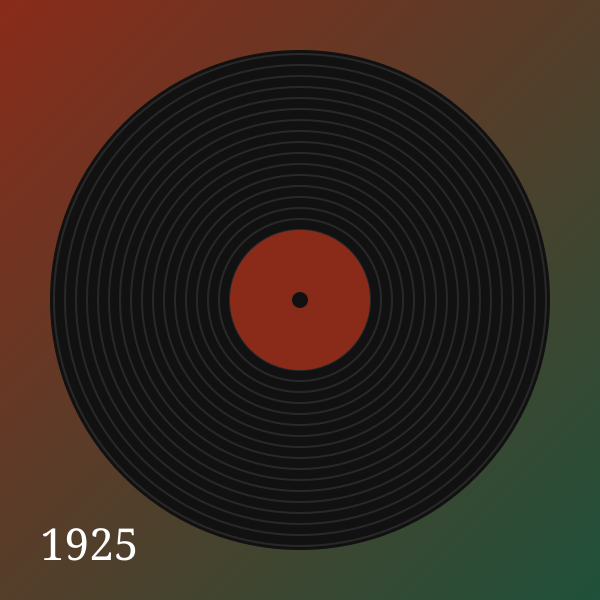

Roland C. Nathaniels, “Anlo Patriotic Song” / “Ewe Battle Hymn” (Zonophone 3972, 1925)

Background: The titles “Anlo Patriotic Song” and “Ewe Battle Hymn” invite investigation of collective identity, resistance and historical grievance, but neither title proves an anti-colonial message. “Battle hymn” may be a conventional religious or ceremonial description; the discography calls it a “Native melody,” not a political protest song. “Patriotic” may refer to Anlo community identity without a specific grievance or adversary.